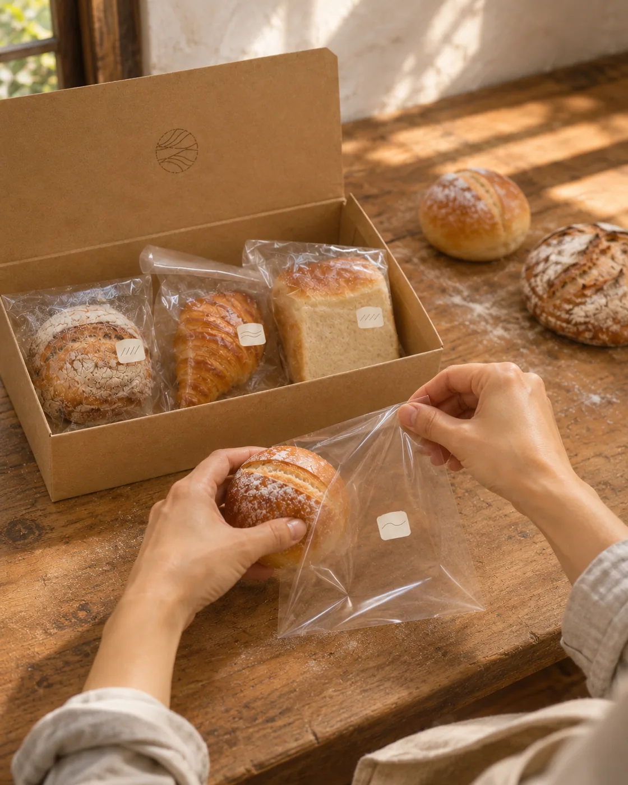
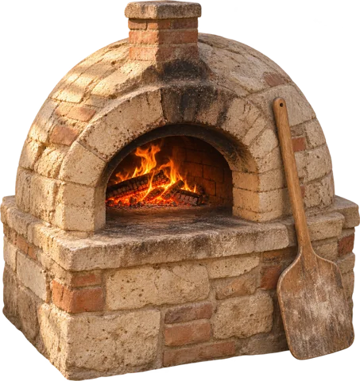
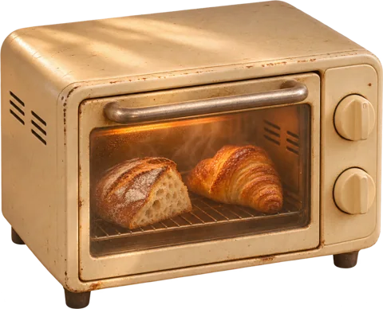
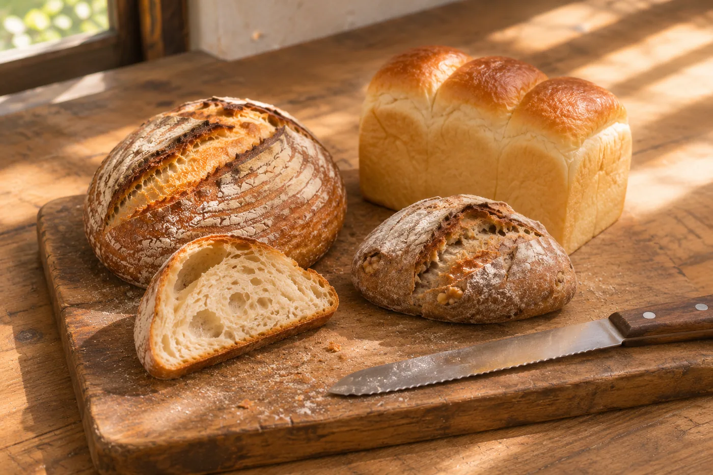
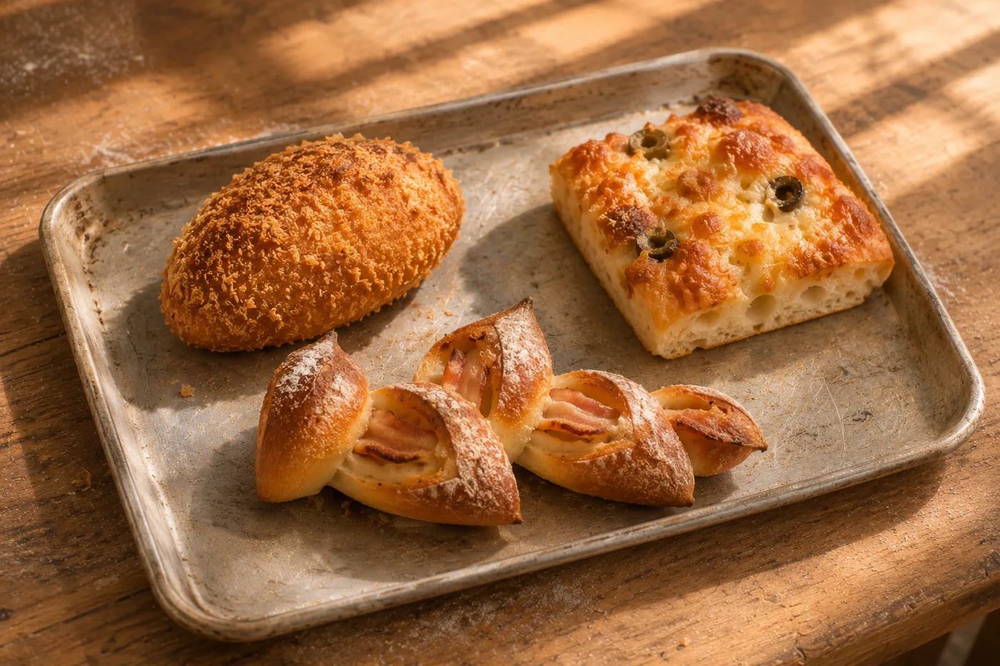

朝6時半の、
窯出しに並んだような
焼きたてのパンを。
4つの棚four shelves
4つの棚から、
6個を詰めて届けます。

ひとつ窯のこと
石窯ひとつで、
毎朝焼ける分だけ。
住宅街の角の、古い民家を直した小さなパン屋です。朝6時半に窯を開けると、近所の方が並んでくださいます。遠くに住む方にも同じ焼きたてを届けたくて、焼いてすぐ凍らせて送るようにしました。皮がいちばんおいしいと思っています。
あさひ町 2-14 角の青い戸
火・水やすみ 6:30〜売り切れまで

11月13日（金）本日の窯出し

はじめての6個
はじめての6個 1,980円税込・
送料込み
定期便の1回分より500円お安く
石窯カンパーニュ・山型食パン・クロワッサン
あんぱん・ベーコンエピ
今月の1つ 栗のブリオッシュ
今月の残り 86 / 300 セット11/13 朝の時点
1回だけでも大丈夫です
お試しを注文する- 続ける時は
- 定期便 2,480円（送料込み）
6個・月に一度・届いたあとに申し込み - 休む・やめる
- LINE でひとこと。0円
回数のしばりなし

窯はひとつ。
月に300セットまで。
一度に焼ける数が決まっているので、増やせません。今月分がなくなったら、翌月の窯出しにご案内します。
- 1回に12個窯に入る数
- 月に300セット焼ける回数から決まる上限
- 残り 86セット11/20 朝の時点
凍ったまま、トースターへ

5分トースターで
焼いてすぐ凍らせるから、
焼きたてに戻ります。
解凍はいりません。凍ったままトースターに入れて5分。皮はぱりっと、中はふわっと戻ります。

焼き方
冷凍する前に、
店でしていること。
01
260℃の石窯で
焼きます。
皮までしっかり焼くので、凍らせてもトースターで戻ります。
- 02粉は国産、酵母は店のもの。
- ひと晩おいて、発酵させます。
- 031回に焼くのは、12個。
- 全部に目が届く数です。
3回目、6回目、
12回目の方の声。
届いた家の声
平日の朝に、焼きたての香りがするようになりました。子どもが先に起きてきます。
40代・4人家族 6回目
冷凍とは思えない、皮のぱりっと感。
トースターの5分が楽しみです。30代・ひとり暮らし 3回目
近くにパン屋がないので、月に一度の箱が待ち遠しいです。
60代・2人暮らし 12回目
はじめての6個は、送料込みで 1,980円
お試しを注文する今月の12のパン
今月の12のパン。
お試しは、この中から6個。

01
食事パン毎朝の主食に
- 石窯カンパーニュ
- 噛むほど香ばしい
- 山型食パン
- 耳までやわらか
- くるみのパン
- 朝のスープに

02
甘いパン午後のひと休みに
- クロワッサン
- バターの層
- あんぱん
- こしあん
- シナモンロール
- やさしい甘さ

03
惣菜パンお昼の一皿に
- 焼きカレーパン
- 揚げずに焼く
- ベーコンエピ
- 黒こしょう
- チーズのフォカッチャ
- 温めてとろり

04
季節のパンその月だけの1つ
- いちじくのパン
- 秋だけ
- 栗のブリオッシュ
- 秋だけ
- りんごのデニッシュ
- 秋だけ
お試しの6個は、店で選んで詰めます
お試しを注文する届くまで
注文から朝の食卓まで、
3つだけ。
- step1
まず、6個だけ
店が選ぶ6個。1,980円、税・送料込み。1回きりです。
- step2
届いたら冷凍庫へ
焼いた翌日に、冷凍便で届きます。
- step3
食べる朝に、5分焼く
トースターで焼きたてに戻ります。
よくある質問
冷凍庫に入るか、やめられるか。
先にお答えします。
冷凍庫に入りますか？
6個で、A4の紙ほどの平たい袋が2つです。引き出しの冷凍庫にも立てて入ります。
どのくらい日持ちしますか？
冷凍で1か月が目安です。届いた日から数えてください。
トースターがない時は？
オーブンやフライパンでも焼き戻せます。焼き方の紙を箱に入れています。
お試しのあと、自動で定期便になりますか？
なりません。お試しは1回だけです。続ける時は、届いたあとにお申し込みください。
休み方・やめ方は？
LINE でひとこと送るか、マイページから。いつでも休む・やめるができます。回数のしばりはありません。
アレルギーの表示は？
12のパンそれぞれに、原材料とアレルギーの表示を載せています。

次の窯出しに、
あなたの6個を。
まだ迷う方へ
窯出しの朝だけ、LINEでお知らせします。今月分が終わっていた時も、翌月の受付をお知らせします。
登録は1タップ。いつでも外せます
LINEで窯出しを受け取る